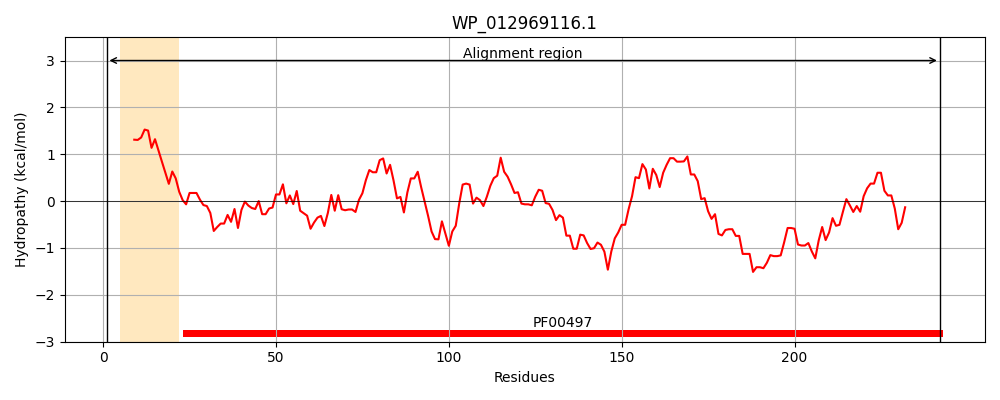
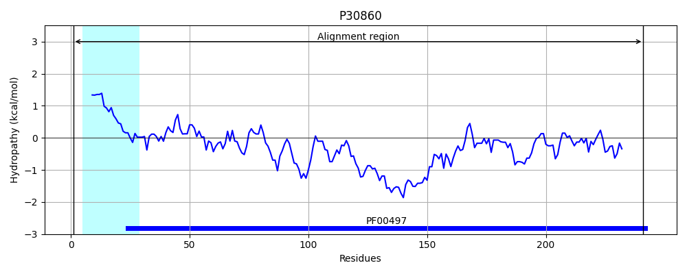
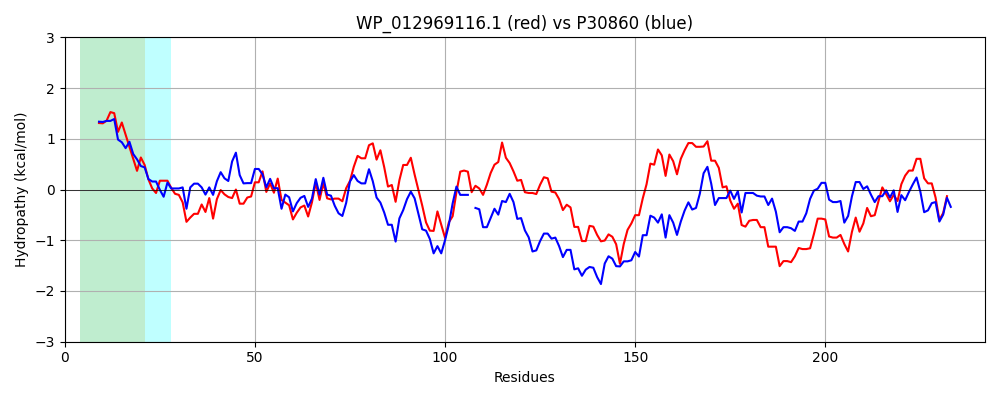

Hit Accession: P30860
Hit TCID: 3.A.1.3.3
Hit Description: gnl|BL_ORD_ID|9732 gnl|TC-DB|P30860|3.A.1.3.3 Arginine-binding periplasmic protein 2 precursor - Escherichia coli.
Mach Len: 242
e:0.000000
Query TMS Count : 1
Hit TMS Count: 1
TMS-Overlap Score: 0.900000
Predicted Substrates:CHEBI:2643;arginine
BLAST Alignment:
Score: 584 , Bit scores: 229 bits, E-value: 6.9e-76, Alignment length: 242, Percentage identity: 45
Query: 1 MRKVLTVLLLSTLAIGTASAETLHFGTTTVNPPFVTANGKNQPVGFDIDLAHALCQQMQAQCQFTAQRFDTLIPALRFKKFDAVIAGMEVIPMREKQVAFSRPYRQALSGVVIVNKDVAHTFADLKAKKIGVVKGTLHQHYLRDKQKAVQAIPYDDVASALAALKAGEITGVMSDFATLDAWQQENPDYAIMDERATDPAYYGKQYAIAVRKDDPELLNAINDALTAVMATPDFQQMQQKWF 242
M+K++ LL++ G ++AE ++FG + PPF + N+ VGFDIDLA ALC+QMQA+C FT FD+LIP+L+F+K+DAVI+GM++ P R KQV+F+ PY + S VVI KD TFADLK K+IG+ GT HQ Y++D+ V+ + YD +A LK G I GV D A ++ W + NP + E+ TDP Y+G IAVR D+ LL +N+AL A+ A +Q++ +WF
Sbjct: 1 MKKLVLAALLASFTFGASAAEKINFGVSATYPPFESIGANNEIVGFDIDLAKALCKQMQAECTFTNHAFDSLIPSLKFRKYDAVISGMDITPERSKQVSFTTPYYEN-SAVVIAKKDTYKTFADLKGKRIGMENGTTHQKYIQDQHPEVKTVSYDSYQNAFIDLKNGRIDGVFGDTAVVNEWLKTNPQLGVATEKVTDPQYFGTGLGIAVRPDNKALLEKLNNALAAIKADGTYQKISDQWF 241 | Protein Hydropathy Plots: |
|---|
|  |  |
Pairwise Alignment-Hydropathy Plot:
|
|---|
|  |